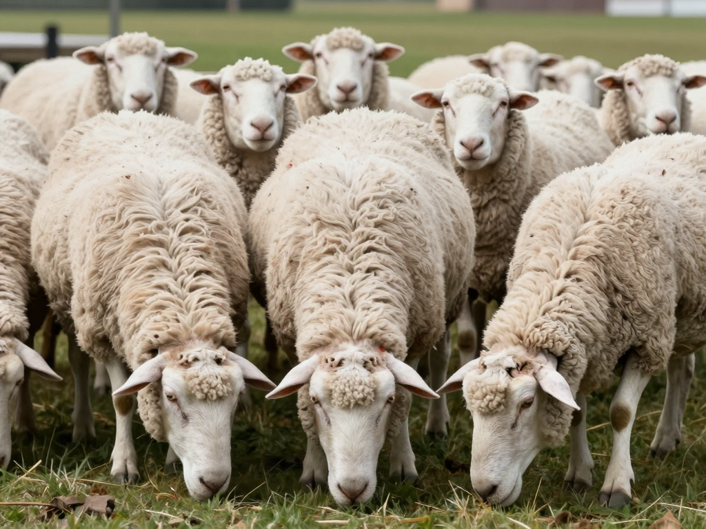

硬組織利用支持肢蹄健康與生長框架
降低蹄病相關淘汰損失，提升體重與均勻度
肢蹄健康是反芻動物生產力的隱形基石
以下數字為產業宣稱 / 田間案例參考，非受控實驗室保證。

兩步放大稀釋，確保均勻混合
取少量全價飼料（約 5–10 倍量），與活力得®充分混勻，製成預混料。
將預混料加入當批全量飼料，充分攪拌。1 公斤兌入 1 噸全價飼料，2 次放大稀釋確保均勻。
避免直接倒入大批飼料；勿超量使用；存放陰涼乾燥處。
| 物種 / 階段 | 建議添加量 | 使用時段 |
|---|---|---|
| 肉牛 / 肉羊 | 300–500 g / 噸飼料 | 育成至肥育全段 |
| 泌乳牛 | 400–600 g / 噸飼料 | 泌乳期全段 |